一個人從零開發、上線並持續營運的網頁遊戲。玩家進副本前配置能力值、技能、卡片與夥伴，戰鬥一鍵自動結算，靠配置推進副本層數；通關後解鎖主線小說，劇情中認識的角色會成為之後能並肩作戰的夥伴。
醒來的地方是三界：諸神所在的雲空大陸、魔法充斥的潘朵拉，以及只剩無機生命的次元界。伊甸的造物主「時空萬象」命令使徒魔劍使獵殺三界的創世主，沒有人知道原因。旅程的終點，是踏進伊甸的大門。
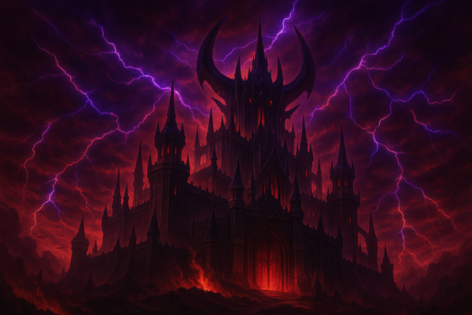
造物主殞落後，雲空大陸下界的世界根源開始騷動。四邪神要復活「父親大人」，並掠奪造物主四散的神力「創世餘暉」。各方勢力為此搶奪死靈之書「尼克羅諾米肯」，而三界真正的秘密，只有來自外宇宙的存在知道。
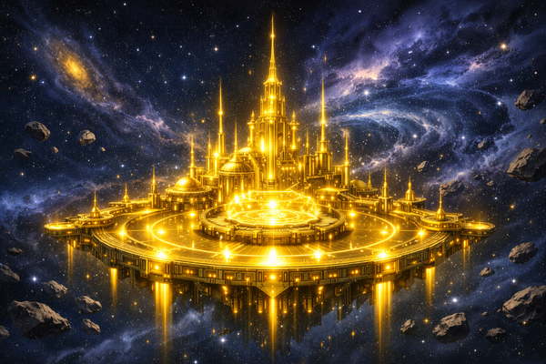
三界的屏障消失，寰宇的「概念化身」注意到了這裡。寰宇本源「科詩莫斯」下達殲滅令，要將被稱為異端的埃雷西斯星系徹底毀滅。「浩劫」率先進攻，伊甸的星空最前線戰況膠著，這時「偏差」伸出了援手。
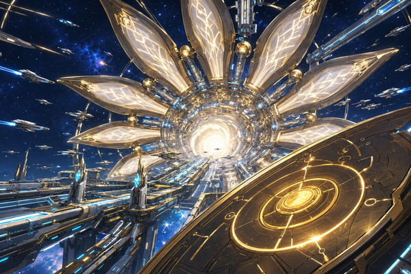
科詩莫斯寰宇之外，是熱寂的領域。熵增斥候為了獻給軸心的「奧克托爾」，正一顆顆湮滅僅存的新星。一群「追逐光的探險家」成立了寰宇聯合公司，打算把寰宇的光送進軸心的每個角落。
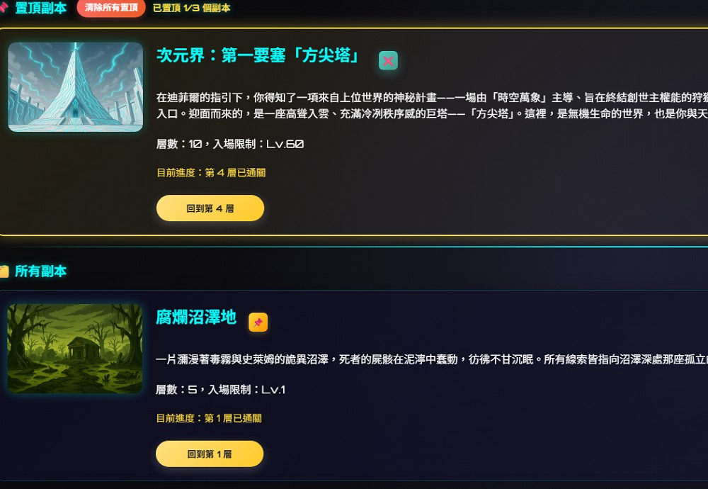
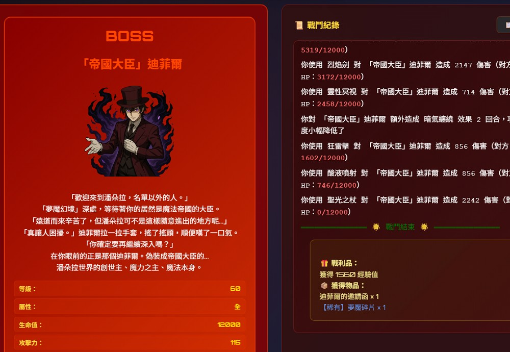
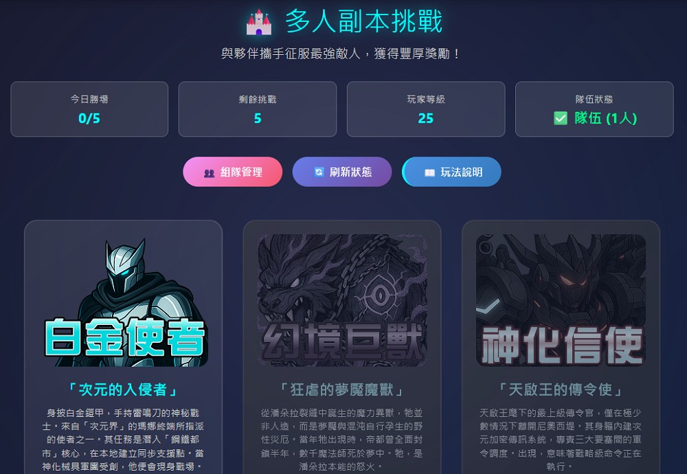
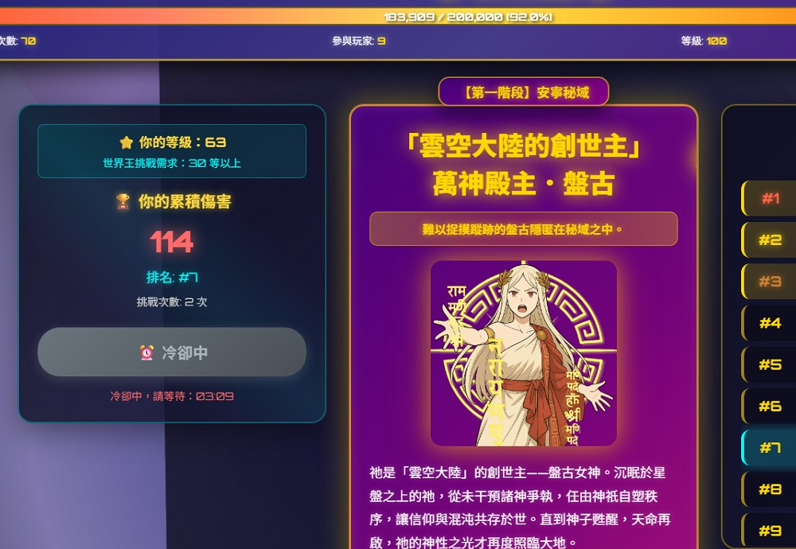
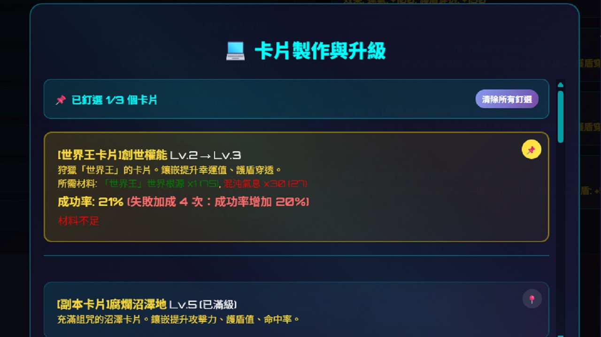
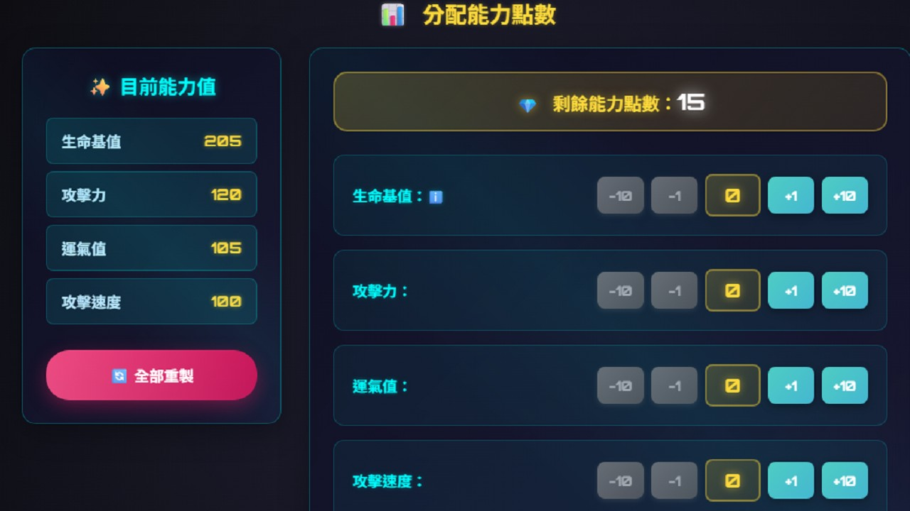
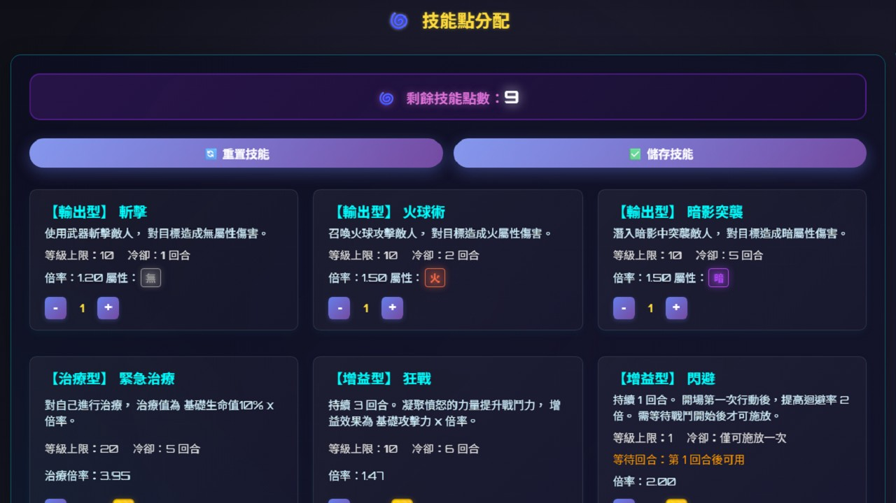
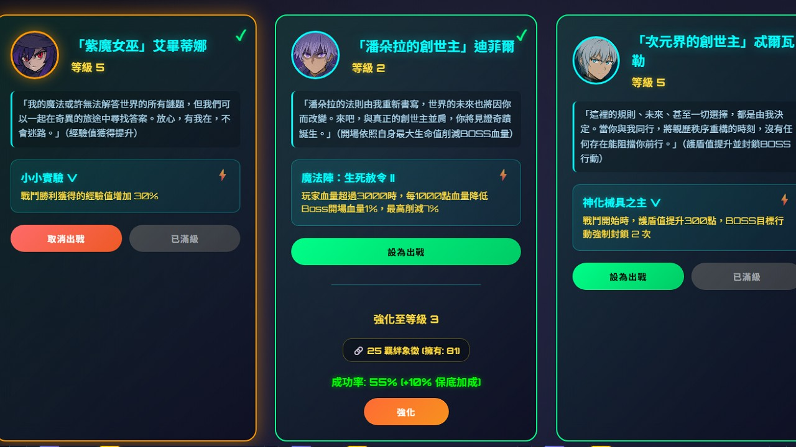
主線以圖文小說的形式隨副本進度解鎖，目前寫到第 68 章，另有夥伴個人故事、人物關係圖與術語辭典。每座副本的 BOSS 都對應劇情中的角色，怪物說明和道具介紹也會補上主線沒講到的細節。
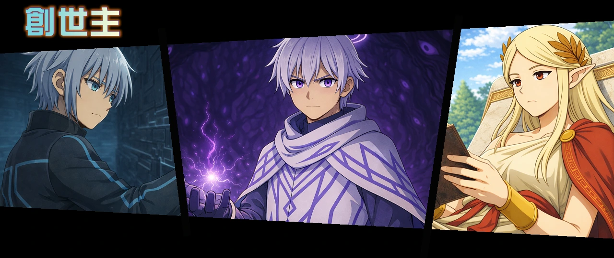
三界的創世主，分別創造了次元界、潘朵拉、雲空大陸
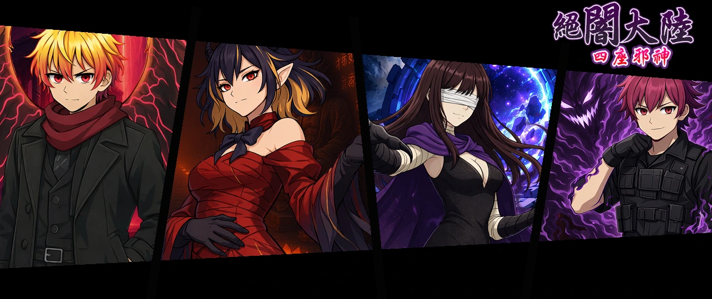
絕闇大陸的四座邪神，分別司掌鬼、魔、無、惡
伊甸的九席永光序列，代行時空萬象的星空律令
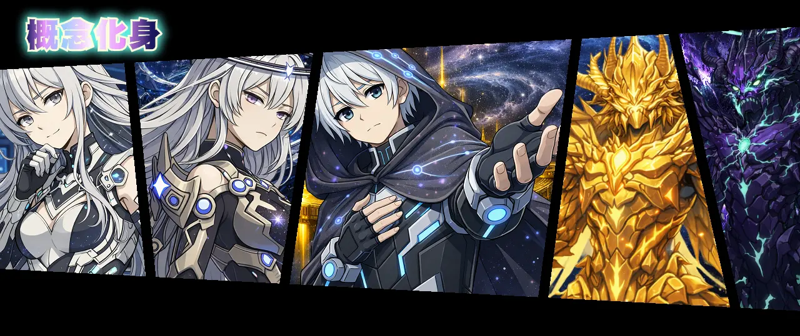
科詩莫斯將自身分割為數個概念化身，依「律令」擴張「領域」
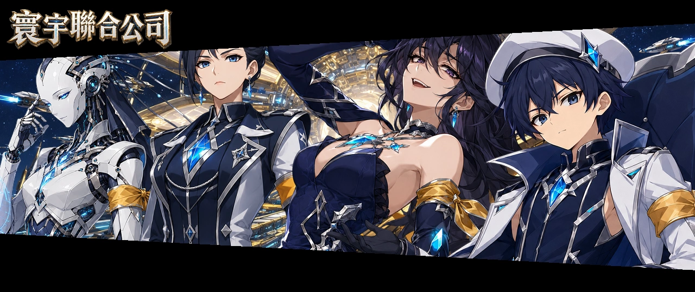
「追逐光的探險家」跨越軸心，尋找寰宇之外的真實
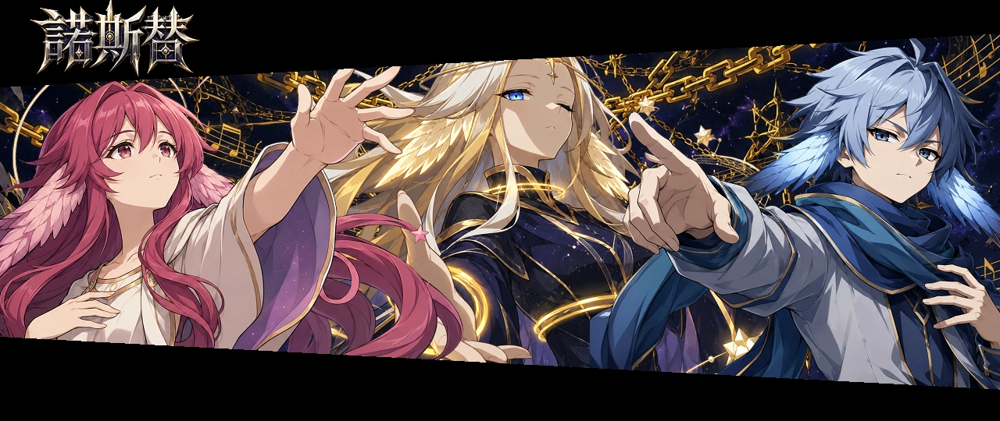
諾斯替外神「佩雷若瑪」在軸心中獵殺「刻諾瑪」
原生 HTML / CSS / JavaScript，部署於 Cloudflare。手機與電腦共用同一套頁面，並提供多段效能模式。
Python Flask API 部署於 Render，戰鬥引擎、多人副本與各系統邏輯都在伺服器端結算，前端只負責呈現。
Firebase Firestore 與 Firebase Auth。遊戲靜態資料以 JSON 管理，API 請求做身分驗證與頻率限制。
本專案為非營利性質，僅作為個人學習與社群交流之用，所有設計與開發皆不涉及商業或收費行為。